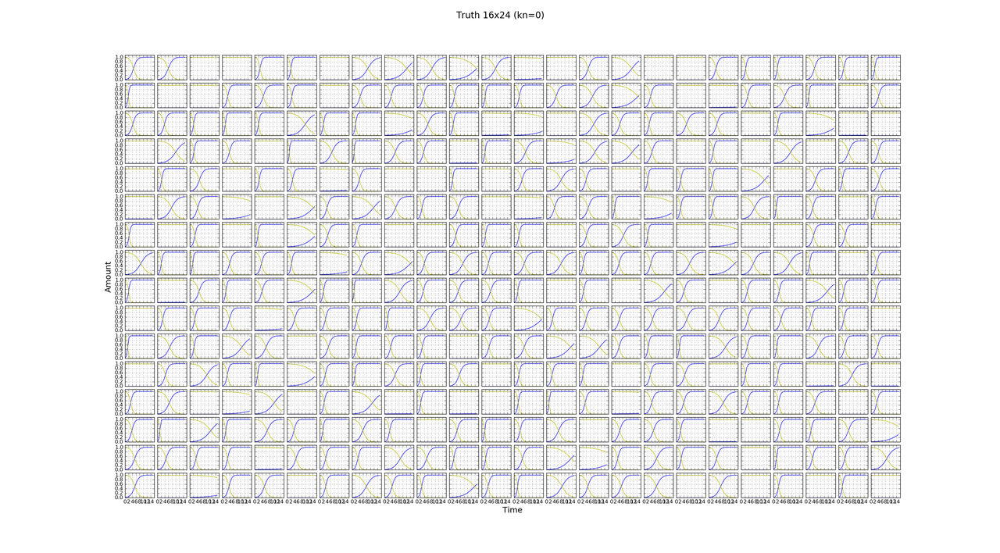
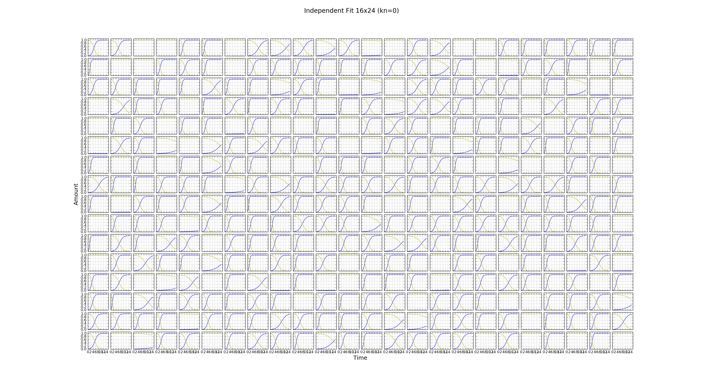

Successful full plate independent fit
Outline
In a previous blog post I did not recover good fits of competition model simulations with zero nutrient diffusion constant kn (equivlalent to the indepenent model). This was worrying when fitting the independent model. I had not realised that minimization was stopping early due to a limit on the maximum number of function evaluations. Here I show that, with better stopping criteria, the independent model can be fit to the simulation data. Data was simulated for 21 equally space timepoints which is comparable to experiment.
Results
Discussion
We can successfully fit a whole plate using the independent model. This is likely to be true for the competition model as well if we use techniques described in the previous blog post but we should check this.
Using default options for the minimization, except for the maximum number of function evaluations which was unlimited, fitting was very slow.
I should have saved parameters and values of the objective function every 100 iterations or so. This would have allowed me to determine how long the simulations should run for in order to reach a minimum with the required level of accuracy.
Estimates should be accurate enough to determine whether the independent or competition model provides a better fit by comparing the consistancy of growth constant estimates for identical strains. Ideally errors in growth constant estimates should be small compared to the range of their distribution. In simulations, without experimental noise but with a similar number of observations, we can recover growth constants to a high precision. Here the MAD of r estimates from truth was of order 10E-4 with true parameter values ranging 0 - 4.54.
Biological variance in growth constants between identical strains will also be present in real data.
Comments